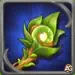
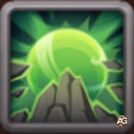

Verdoc e Phyto não são apenas mais um par de Titãs eles representam uma nova era de sinergia da Terra em Hero Wars: Dominion Era. Seu vÃnculo único aprimora o controle de multidão e cria um impulso de batalha imparável.
Essa dupla fortalece sua equipe ao simplificar a ativação do Totem da Terra e amplificar os efeitos de atordoamentos de aliados como Nova e Moloch, tornando-os indispensáveis para qualquer formação de Titãs da Terra.
Guia Verdoc e Phyto - Hero Wars: Dominion Era, um jogo desenvolvido pela Nexters.
Juntos, eles introduzem uma nova mecânica de combate que recompensa o jogo tático e o bom timing. Sua sinergia com Titãs que usam atordoamentos, como Nova e Moloch, cria cadeias devastadoras de controle de multidão que podem neutralizar equipes inimigas.
Guia de Habilidades de Verdoc e Phyto - Hero Wars: Dominion Era
Aprenda como as habilidades de Verdoc e Phyto trabalham juntas para invocar Phyto, aprimorar atordoamentos e fortalecer a ativação do Totem da Terra, transformando as batalhas de PvP.
Fitogênese (Habilidade Suprema)
Quando Verdoc usa sua habilidade suprema, ele invoca Phyto para o campo de batalha. Ao chegar, Phyto libera uma onda de choque que causa
(20% ATQ) de dano e atordoa inimigos próximos por 1 segundo.
Isso a torna uma habilidade tanto ofensiva quanto de controle mesmo que o dano base não seja muito alto, o atordoamento garantido pode interromper Titãs inimigos e atrapalhar a rotação de habilidades deles.
Verdoc e Phyto compartilham um VÃnculo Espiritual que os conecta profundamente ao elemento Terra.
Nas batalhas, eles contam como 2 Titãs da Terra para fins de ativação de totem.
Isso significa que sua equipe pode ativar o Totem da Terra muito mais rapidamente do que o normal uma enorme vantagem em lutas PvP, onde o tempo de ativação pode definir a vitória.
VÃnculo Espiritual: Terra (Habilidade Passiva) - Titãs Verdoc e Phyto - Hero Wars Dominion Era.
Prioridade de Evolução de Artefatos de Verdoc e Phyto - Hero Wars: Dominion Era
Descubra a melhor ordem de evolução de artefatos para Verdoc e Phyto em Hero Wars: Dominion Era. Saiba quais artefatos aumentam mais o poder de invocação e controle deles.

Artefato de Arma: Raiz de Andvari
Atributo Obtido: +479.475 Dano Elemental
Prioridade de Evolução:Muito Alta – Este artefato aumenta diretamente o dano da onda de impacto da habilidade Fitogênese ((20% ATQ)), tornando a habilidade suprema de Verdoc e Phyto muito mais perigosa em batalhas de PvP. Como o controle deles depende de causar dano suficiente para manter os inimigos sob pressão, este artefato deve sempre ser o primeiro a ser maximizado.
Artefato Coroa da Terra
Atributo Obtido: +97.482 Armadura Elemental
Prioridade de Evolução:Alta – Aumenta a Armadura Elemental, reduzindo o dano recebido de Titãs inimigos. Como a Vida de Verdoc está ligada à sobrevivência de Phyto, melhorar a defesa deles aumenta significativamente a durabilidade em combates de PvP. É uma excelente segunda prioridade, logo após a arma.
Melhores Fusões Elementais de Totem para Verdoc e Phyto
Verdoc e Phyto se beneficiam muito de Fusões de Totem que aumentam controle, sobrevivência e dano em área. Como eles se concentram em invocar e apoiar Titãs da Terra, as fusões que protegem aliados, refletem dano ou desestabilizam inimigos funcionam melhor em combates PvP.
1º – Último Clarão
Esta fusão concede à equipe de Verdoc e Phyto uma segunda chance de vida. Quando um Titã aliado está prestes a morrer, ele se torna invulnerável e ganha grande velocidade e poder de ataque por alguns segundos. É perfeita para momentos decisivos de PvP, quando o inimigo pensa que venceu apenas para enfrentar uma fúria súbita da Terra!

2º – Murmúrio das Rochas
Cria uma barreira rochosa que protege todos os aliados e reflete o dobro do dano absorvido. Essa fusão combina perfeitamente com as habilidades de barreira de Verdoc e Phyto, fortalecendo a defesa e punindo os atacantes. Ideal para formações defensivas em PvP.
Restaura a vida dos aliados e causa dano aos inimigos próximos. É uma opção equilibrada, mas menos impactante que Último Clarão ou Murmúrio das Rochas em PvP de alto nÃvel, onde velocidade e controle são mais importantes que cura gradual.
Melhores Fusões Primordiais de Totem para Verdoc e Phyto
Os Totens de Fusão Primordial se concentram em cura, escudos e regeneração de energia todos capazes de amplificar a sustentação e o estilo de suporte de Verdoc e Phyto. Esses Titãs prosperam quando a equipe permanece viva tempo suficiente para que suas plantas e raÃzes invocadas dominem o campo de batalha.
Concede uma chance de restaurar energia após o uso de habilidades. É útil, mas menos confiável, já que Verdoc e Phyto já geram energia de forma eficiente por meio de suas próprias mecânicas.
5º – Chamado dos Elementos
Aumenta o poder de ataque conforme a vida diminui, o que entra em conflito com o estilo defensivo e orientado ao controle de Verdoc e Phyto. É mais adequado para Titãs agressivos, não para os protetores da Terra.
Como Contra-Atacar Verdoc e Phyto – Hero Wars: Dominion Era
Verdoc e Phyto podem formar uma dupla poderosa do elemento Terra, mas, como todo combo de Titãs, eles possuem fraquezas claras. Sua maior vulnerabilidade está contra os Titãs de Fogo especialmente Araji, Moloch, Ignis e Vulcan que conseguem atravessar as defesas da Terra e interromper sua preparação antes que possam liberar toda a sinergia.
Os Titãs de Fogo causam dano puro e explosivo que ignora grande parte das proteções e barreiras de Verdoc. As rajadas massivas de Araji destroem facilmente os escudos da Terra, enquanto os atordoamentos de Moloch e as erupções de Vulcan interrompem a cura de Phyto e a ativação das habilidades passivas de Verdoc. Se Verdoc for atordoado ou interrompido no momento errado, a equipe da Terra perde seu ritmo defensivo dando vantagem aos Titãs de Fogo.
Para liberar todo o potencial de Verdoc, concentre-se em sincronizar as ativações do Totem e dominar o sistema de Fusão Elemental e Primordial. Quando apoiado por uma equipe de Titãs da Terra bem equilibrada, ele se transforma em uma força imparável transformando cada batalha em um teste de habilidade e paciência, em vez de pura força bruta.
Você gostou do nosso Guia do Titã Verdoc e Phyto para Hero Wars Web e Facebook? Há algo que não entendeu ou gostaria de sugerir mudanças? Convidamos você a se juntar à nossa sessão de comentários na página do Alexandre Games Blog. Não hesite em expressar sua opinião, clarificar suas dúvidas e compartilhar sua sugestões. Clique no botão abaixo para começar:


 em Hero Wars: Dominion Era") Melhor Guia de Totens (Como Obter Totens) em Hero Wars: Dominion Era
Melhor Guia de Totens (Como Obter Totens) em Hero Wars: Dominion Era


 Como Ativar Códigos Promocionais em Hero Wars: Dominion Era 2025
Como Ativar Códigos Promocionais em Hero Wars: Dominion Era 2025
 Calendário de Hero Wars: Dominion Era
Calendário de Hero Wars: Dominion Era